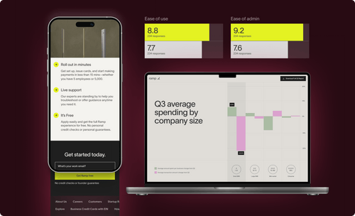
The 2 main Growth teams at Ramp are Acquisition and Activation. I worked with the acquisition team to launch experiences and experiments while working closely with the brand, marketing and content teams.
Within acquisition, I focused on CRO, Referrals, and data consumption/free tools experiences. Social media and content experiments were handled by other folks within the team.
I worked as the only designer on the Growth (acquisition) team with 2 PMs and a team of 3 front-end developers. This case study showcases a compilation of some of the growth projects I did around 3-4 months.
The idea was to launch quick experiments in a fast weekly sprint cycle (sometimes bi-weekly or longer for bigger projects). I was also responsible for doing the data analysis and coming up with experiment ideas to take back to the team for prioritization.
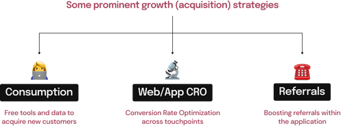
The team came up with an idea during a hack-athon around building a web experience to help finance teams/ founders/ CFOs/ etc. with spending trends across companies in the US. Ramp already has a detailed report launch every quarter to highlight such trends and we wanted to create a demo-web experience of those same insights in an attempt to acquire new users.
Enable digital consumption of finance trends to relevant users so they can make sound decisions for their own company.
Targeting relevant users through a web-based experience will help us unlock a new user acquisition channel.
We wanted to target finance professionals who led teams or owned businesses. Finance professionals have already been consuming such spend information across the internet and we hadn't tapped into that audience yet.
Gusto has a small microsite showcasing finance date around employment
Preview of Ramp's quarterly report showcasing spending trends for Ramp's businesses (15,000+)
🧬
Keep the atomic structure intact (Typography, color, CTAs)
🔖
Draw similarity between the print & web interface
📣
Un-deniably Ramp with a slightly bolder expression
🧮
Heavy on interactivity, transitions, and visualizations
📮
One-off experience but could be used as a template for future iterations of such interactive experiences
😍
Positive user feedback/viral-ity
An experience that enables sharing/word-of-mouth within finance professionals (and potentially outside this circle as well).
📧
Email submissions
Higher email submissions show higher intent to consume data as well as provides MQLs and SQLs (new customer acquisition)
📥
Data download from the microsite
Similar to the email submission criteria, data download means partial data download from the microsite showcasing high intent/value proposition.
⚠️ This visual style works for a finance experience but needs to be more on-brand. There is also a lack of narrative in this experience.
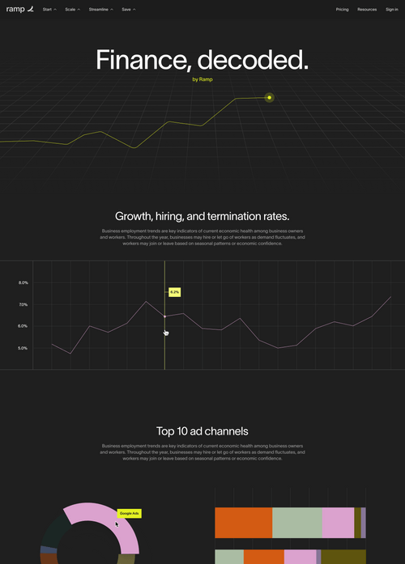
To bring a better narrative to the page, we consulted the Finance head and scoped down the experience to 3-5 key data points. (A very small but imp. subset of the spend report)
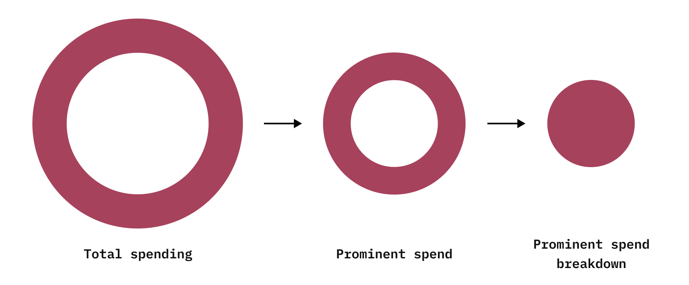
I decided to talk to the Finance head to scope down the data and then tried building a narrative within the experience (as shown above - a top down deep-dive into a single type of spending). I also used the company sizes as pivot to tie together the entire experience (bottom right).
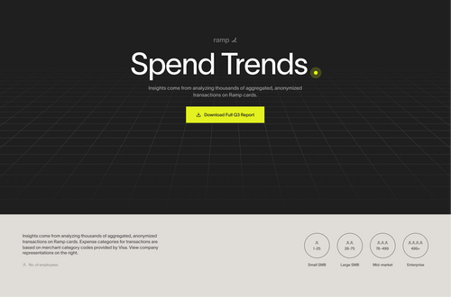
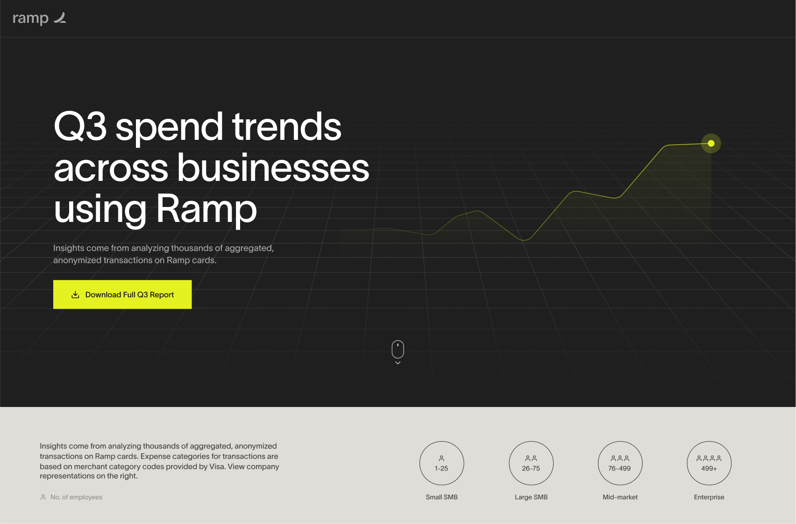
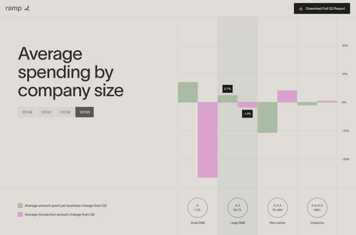
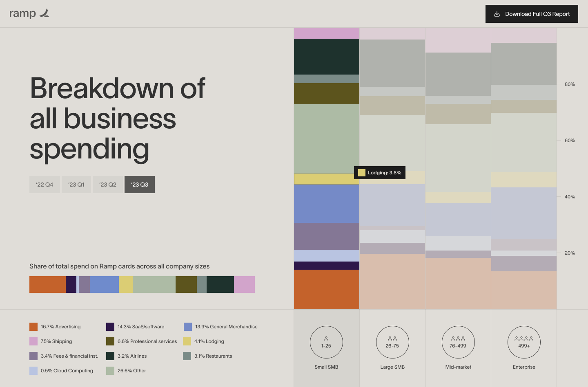
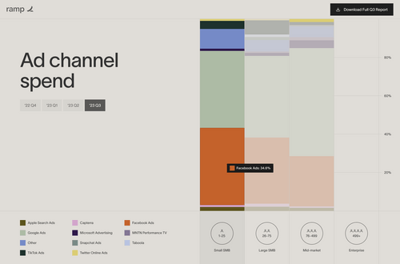
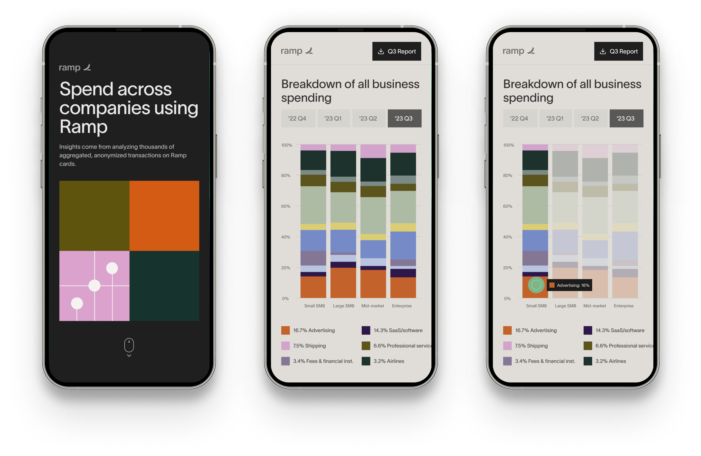
Referrals is one of the most prominent user-acquisition growth strategies for a product and Ramp referrals experience hadn't really been changed since it was launched 3 years back. We wanted to take a phased approach to revamp different aspects of referrals within Ramp. The underlying building blocks remain the same for any referral experience (shown below and talked about in the previous case-study).
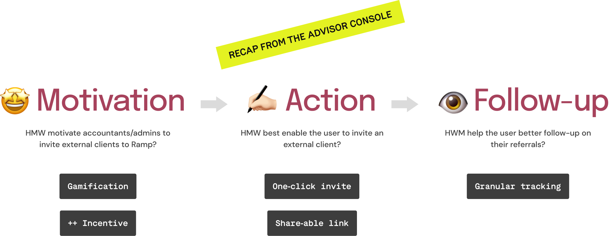
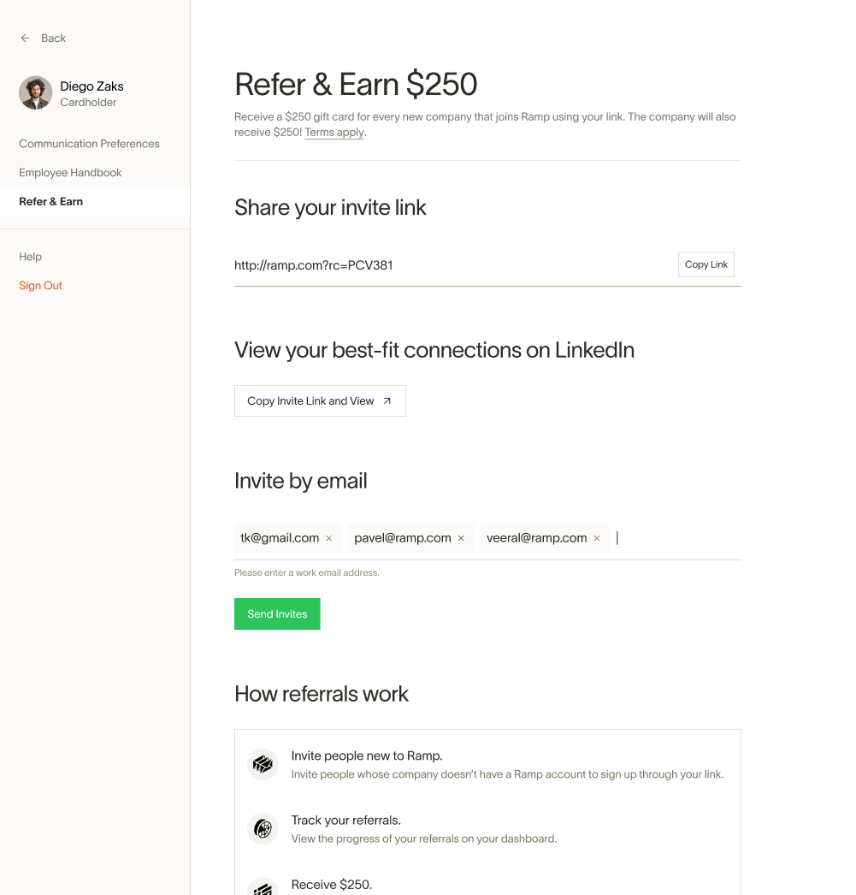
The current experience lacks good hierarchy. HMW bring visual focus in the current experience to highlight the elements that matter the most?
The current experience sits within setting hampering discovery. HMW improve discovery of the referral experience within the app?
We had a robust partner program for accountant referrals and hence it was relatively easier to implement gamification. HMW bring gamification for individual users without a partner program?
I looked at some usage data of impressions on different surfaces and having something of equal priority on the main-nav had 5x more impressions than the referrals experience within settings. This helped me make my case to test and experiment putting the referrals dashboard in the main navigation.
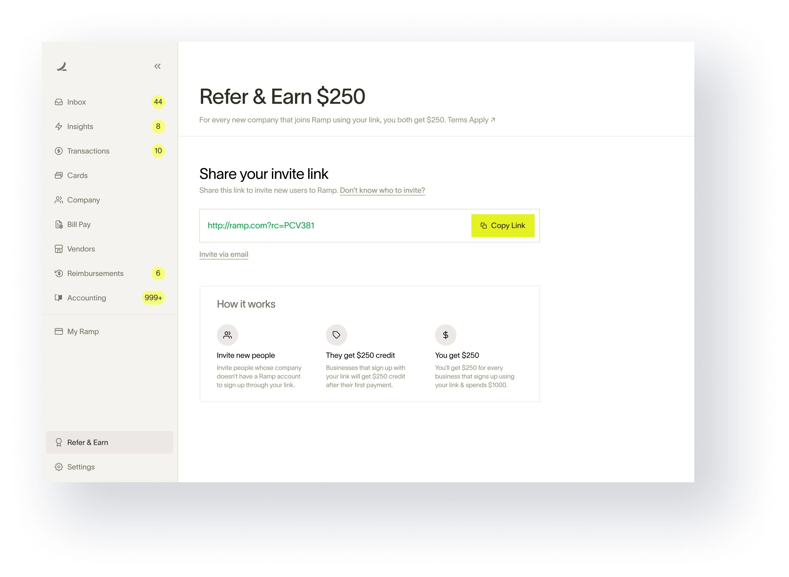
In the previous experience, the earned rewards from referrals had a different destination and I made a conscious call to consolidate both the experiences and put it in the main nav to simplify everything and make an even stronger case for putting referrals in the main navigation. There is no real gamification in-place here but the attempt is to package the current experience in a way that feel gamified.
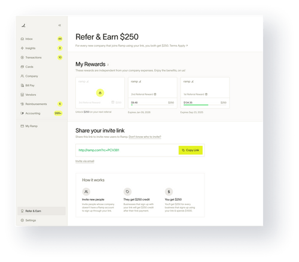
Along with cash awards, there are multiple things that may appeal to a Ramp user. The idea is to make this a truly gamified experience with a variety of rewards. I also added a phone sharing option in the main CTA considering this is a user-user sharing scenario.
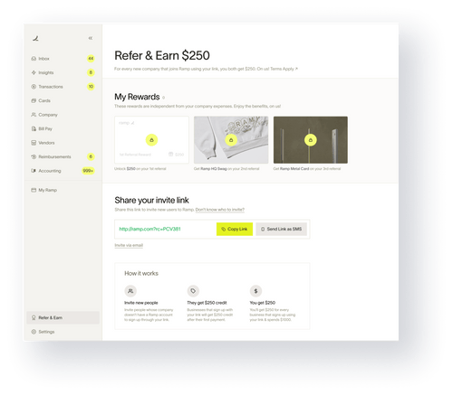
The referral data shows that more than half of the referees start the sign-up process but don't always go through with it. To tackle this problem, we introduced a 'remind' feature that could be used sparsely for gentle nudges.
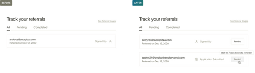
Conversion Rate Optimization (CRO) is a well-known growth strategy for products and I helped shipped dozens of small-intermediate sized experiments across the Ramp web ecosystem to help boost user-acquisition. The following projects showcase only a few of those experiments/improvements.
There are a few teams working on CRO (Marketing and Content being the primary ones). From a design stand-point, I looked at the Conversion dashboards and heat-maps of the pages to come up with high-impact ideas for CRO.
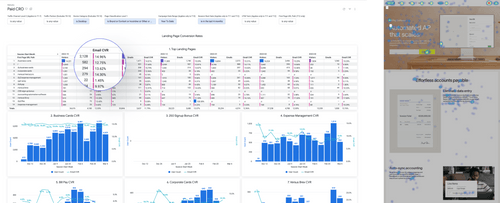
Hypothesis: Users are most likely to engage with the bottom-of-the-page CTAs after going through the page than with any other middle-of-the-page CTAs (sometimes even more than the top fold CTA).
To test this hypothesis, I created a series of more optimized footers (for different use cases) with an email collection field in one of them.
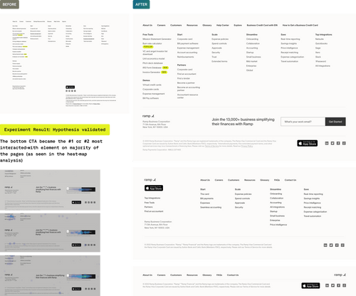
Hypothesis: Using the previous hypothesis, an optimized footer (by cleaning up the visual layout and removing non-necessary elements) will keep the email collection CTA in the viewport at the bottom-most scroll point making it more likely for the user to interact with it.
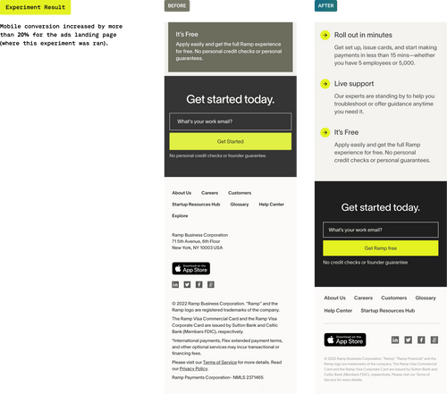
This wasn't really an experiment but an improvement over the current 'competitor analysis pages' within ramp.com. The idea was to bring in social-proof from legitimate sources into the page to establish Ramp as the superior product. The result was an animated loader implemented across the pages.
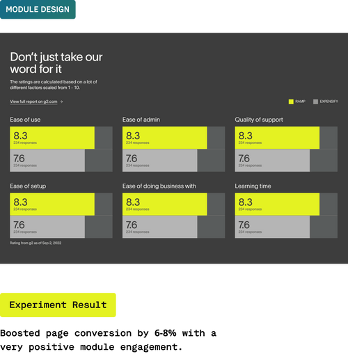
We ran an experiment with a centered layout on a separate ramp page (ads landing page) and got a 12% jump in conversion. I created a similar layout for the main homepage hero with subtle transitions and parallax to get better engagement.
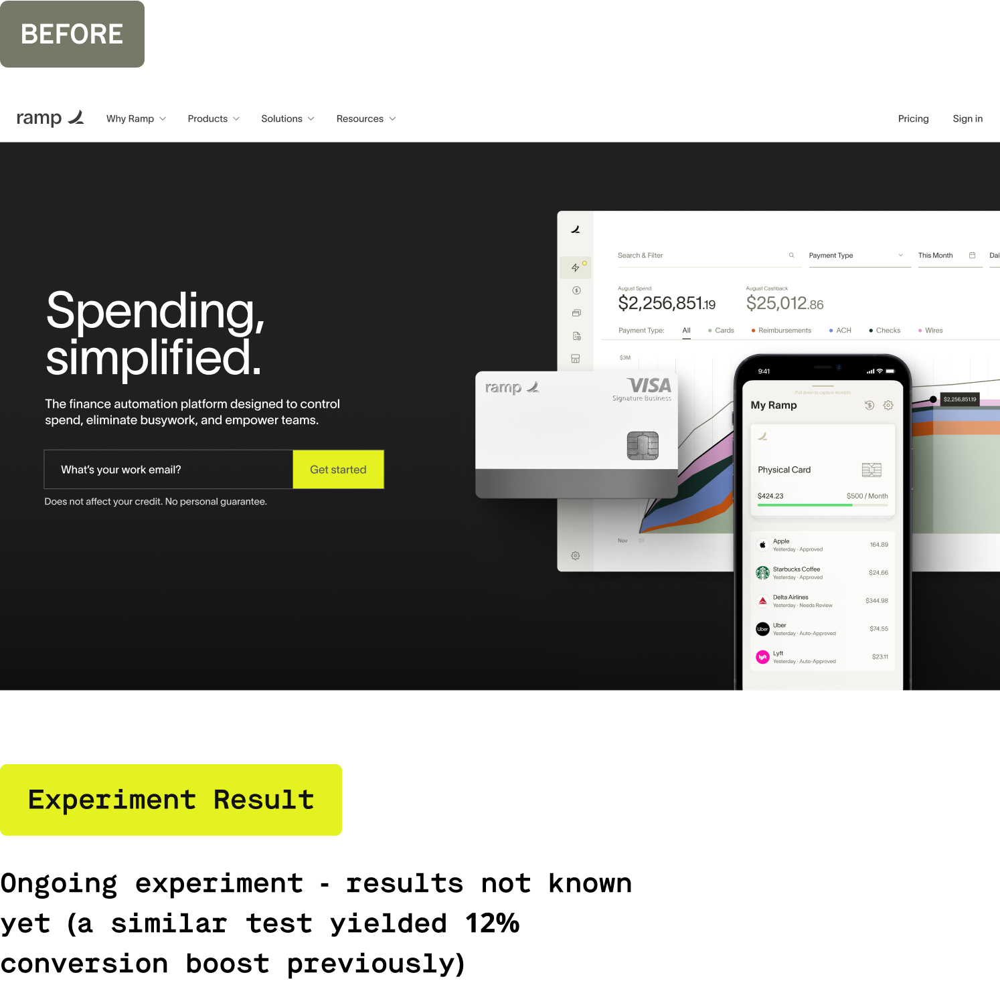
🆎
For fast experimentation sprints, it became increasingly hard to come up with solid ideas to test. I could’ve come up with a formal structured process to come up with ideas based on defined metrics.
⚖️
Growth lies at the cross-roads of brand, product, design & marketing. I was responsible to get buy-ins from the teams and it didn’t work as expected every time. I could’ve come up with a better cadence to bring everyone on the same page.
🏅
I spent a lot of time designing experiments that, if worked as expected, would’ve resulted in an incremental jump in numbers. I could’ve pushed the team to spend more time taking bigger and bolder bets for a greater impact.